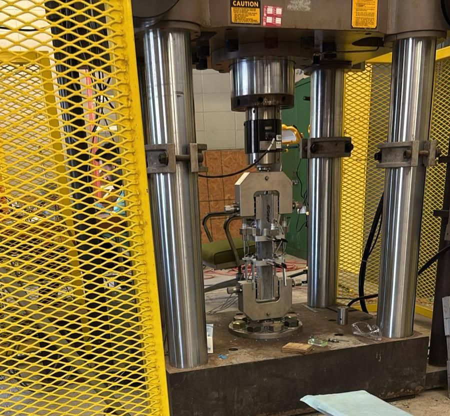

Research
I am a graduate research assistant in Dr. Yen-Fang Su's group at LSU. My main M.S. research combines molecular dynamics simulations and experimental testing of polymer-modified cementitious materials for underwater construction. I have also supported laboratory work on ultra-high-performance concrete (UHPC) for bridge link slabs.
With Dr. Yaxin An in Chemical Engineering, I use molecular dynamics simulations to study how anti-washout admixtures and superplasticizers interact with calcium silicate hydrate (C-S-H), the main binding phase in cement paste. I run these simulations in LAMMPS using LSU and LONI high-performance computing resources.
Research projects
NSF-Funded Research | Underwater Concrete Materials and Additive Manufacturing
My master's research combined molecular dynamics simulations, high-performance computing, and experimental testing to investigate the performance of polymer-modified cementitious materials for underwater construction. Supported by the National Science Foundation (Award No. 2328188), this work examined material stability, washout resistance, rheology, permeability, and compressive strength, with potential applications in marine infrastructure, bridge foundations, and automated underwater construction.
I independently carried out the molecular simulations, laboratory experiments, data analysis, and thesis preparation under the supervision of Dr. Yen-Fang Su and Dr. Yaxin An. This work formed the core of my M.S. thesis.
UHPC for bridge link slabs
Link slabs connect adjacent bridge spans to provide deck continuity. This LTRC project investigates UHPC as a link slab material for Louisiana bridges, motivated by cracking observed in existing link slabs. UHPC's fiber-reinforced tensile response and low permeability make it a candidate for this application.
As part of a laboratory team led by a labmate, I contributed to UHPC mix development and testing against the project's design criteria. My work included mixing and casting trial batches and assisting with compression, tension, bond and splitting tensile tests.



M.S. thesis
Compatibility of Polymeric Admixtures in Underwater Concrete Additive Manufacturing: A Combined Molecular Dynamics and Experimental Study
Underwater concrete mixtures require a balance between workability and resistance to washout. Polycarboxylate ether (PCE) superplasticizers improve flow, while anti-washout admixtures (AWAs) help retain cementitious material during placement. My thesis investigates how their combined use affects polymer adsorption and fresh mortar behavior.
I modeled carboxymethyl cellulose (CMC), polyacrylic acid (PAA), chitosan and dextran at a C-S-H surface in water, both individually and with PCE. The simulations examined adsorption, calcium coordination and hydrogen bonding. In parallel, I tested mortars containing these polymer types, with and without PCE, for yield stress, flow, washout, fresh-state permeability, setting time and strength.
In the simulated systems, CMC and PAA adsorbed through carboxylate coordination with surface calcium. CMC showed more persistent adsorption than PAA, while chitosan and dextran did not show persistent surface association. CMC and PAA retained surface coordination in the mixed systems with PCE.
The mortar tests evaluated how polymer selection and PCE addition affected workability, washout resistance and permeability. These experimental measurements and molecular observations provide complementary perspectives on admixture compatibility; the simulations do not directly predict mortar performance. The entire thesis research was funded by NSF Award No. 2328188 and used computing resources at LSU and LONI.

Publications
- Pasbani, M., Timilsina, S., Su, Y.-F., Okeil, A., An, Y., and Jeong, H. (2026). Characterization framework for underwater printable concrete: modified testing methods with environmental simulation. 2026 SEM Annual Conference and Exposition on Experimental and Applied Mechanics, Norfolk, VA, June 2026. Conference program
- Wang, T., Nag, S., Patel, R., Timilsina, S., Bharti, B., Su, Y.-F., and An, Y. (2025). Salt-responsive behaviors of PVBTACl, NaPSS, and their complex by molecular dynamics simulations and experiments. Soft Matter, 21(37), 7333–7343. doi.org/10.1039/D5SM00282F
Manuscripts in preparation
- Timilsina, S., An, Y., and Su, Y.-F. Molecular dynamics simulation of polymer–mineral interactions: a review.
- Timilsina, S., An, Y., and Su, Y.-F. Molecular dynamics study of polymer adsorption on calcium silicate hydrate.
Posters
- Toward the molecular design of anti-washout admixtures for underwater concrete: a molecular dynamics study. ACI Concrete Convention, Atlanta, GA, October 2026.
- Molecular dynamics study of polymer adsorption on calcium silicate hydrate. 14th Annual LSU Graduate Student Research Conference, 2026.


Service
Organizing committee, APTEC Gulf Coast Polymer Conference (May 2026 to present). More on the Leadership page.
Related course project: Sulfate ion transport in C-S-H nanopores.